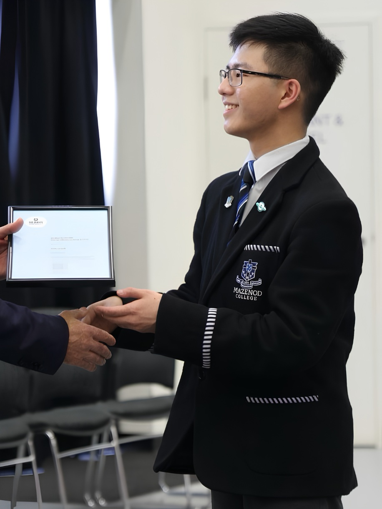

Hi, I’m Joshua, a first-year Bachelor of IT student at Monash University, majoring in
cybersecurity.
I’m exploring digital forensics, network security and CTFs, and I build my skills hands-on
through TryHackMe and Monash’s cybersecurity club.
Projects and write-ups are on the way.
In the meantime, if anything catches your eye, I'd love to hear from you.

"Security is a process, not a product" - Bruce Schneier
I think of cybersecurity like Lego. You’re handed a set of bricks and a problem to solve, but unlike a Lego set, there’s no single instruction manual. There are countless ways to get from problem to solution, and that’s what hooks me: exploring different paths, testing ideas and seeing what works.
Right now I’m building my foundations. On TryHackMe, I’m reinforcing what I learn at uni about networking and Linux, and I take on rooms and CTF challenges whenever I can. Outside tech, you’ll find me listening to music, watching films and TV, getting outdoors, or meeting new people.
Mazenod College
2026 - Present
Design and run youth engagement and leadership programs for secondary students, and coordinate retreats and community events.
Velvet Bean
2023 - 2026
Worked across cashier, floor and kitchen roles in a fast-paced café, trusted with payments and keeping service running smoothly under pressure.
AM2D, ARC Research Hub for Advanced Manufacturing with 2D Materials
2025
Researched the uses of graphene through hands-on lab work in energy storage and printed electronics, and presented my findings to AM2D researchers.
Mazenod College
Led student initiatives as a prefect, building on a year as a Peer Support Mentor and Student Representative Council member.
Monash University
Expected 2028
Majoring in cybersecurity, minoring in software development.
Mazenod College
Combined my studies with leadership, music and community service, receiving the Deakin Young Influencer Award.